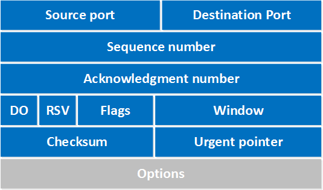

-
TCP (Transmission Control Protocol):
TCP is a connection-oriented protocol that provides reliable, ordered, and error-checked delivery of data between applications. TCP divides data into smaller segments and reconstructs it at the receiving end, enhancing the efficiency of information transmission compared to sending it as a single unit.
-
TCP Protocol Parameters:
-
Source Port Field (16 bits):
The Source Port field denotes the port number of the sending device.
-
Destination Port Field (16 bits):
The Destination Port field signifies the port number on the receiving device.
-
Sequence Number Field (32 bits):
This field indicates the total number of bytes sent to the receiver. It is instrumental for the receiver to reconstruct data correctly.
-
Acknowledgment Number Field (32
bits):
The Acknowledgment Number field contains the sequence number that the receiving device expects to receive next.
-
Data Offset Field (4 bits):
Indicates the starting point of the TCP data payload.
-
Reserved Field (3 bits):
Reserved for future use.
-
Flags Field (9 bits):
Includes control flags such as SYN, ACK, FIN.
-
Window Field (16 bits):
Governs the flow control by specifying the window size.
-
Checksum Field (16 bits):
Provides error-checking for the header and data.
-
Urgent Pointer Field (16 bits):
Specifies the location of urgent data.
-
Options Field (0-320 bits):
Accommodates various optional parameters and settings.
-
Data Field:
Contains the actual payload or data being transmitted.
-
Source Port Field (16 bits):
-
TCP Connection:
A TCP connection is a virtual, point-to-point communication channel established between two devices. A TCP connection involves a three-way handshake for establishment and a four-way handshake for release.
-
UDP Protocol Parameters:
-
Source Port:
Identifies the sender's port number.
-
Destination Port:
Specifies the recipient's port number.
-
Length:
Total length of the UDP datagram.
-
Checksum:
Provides some error-checking for the header and data.
-
Source Port:
-
Three-Way Handshake:
his synchronized three-step process, also known as a TCP handshake or SYN-SYN-ACK, allows both ends to initiate and negotiate the TCP socket parameters simultaneously before actual data, is transmitted.
-
Connection Establishment:
-
SYN (Synchronize):
The client sends a TCP packet with the SYN flag set to initiate the connection.
-
SYN-ACK (Synchronize-Acknowledge):
The server responds with a TCP packet containing SYN-ACK, indicating it is willing to establish a connection.
-
ACK (Acknowledge):
The client acknowledges the server's response, and the connection is established.
-
SYN (Synchronize):
-
Connection Release:
To release a TCP connection, a four-way handshake is used:
-
FIN (Finish):
Initiator signals the intent to close the connection.
-
ACK (Acknowledge):
The receiver acknowledges the request to close the connection.
-
FIN (Finish):
The receiver signals its own intent to close the connection.
-
ACK (Acknowledge):
The initiator acknowledges the receiver's request, and the connection is fully closed.
-
FIN (Finish):
-
Ports:
Each communication endpoint (process or service) on a device is associated with a unique port number. They help direct data to the correct application or service. Ports are categorized as:
Well-known 0-1023 Registered 1024-49151 Dynamic (or Ephemeral) 49152-65565